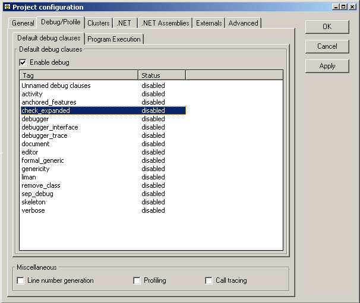
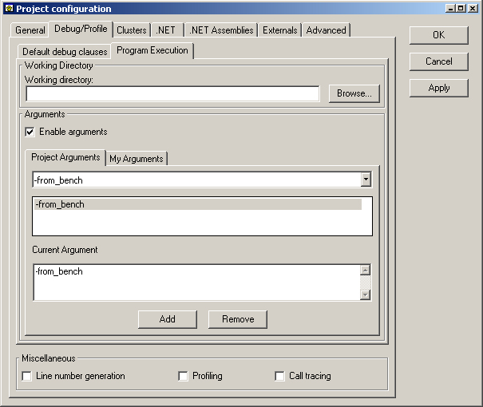

Here is what the debug tab looks like when you have not yet compiled the system you just created. It comprises two tabs, the first and default tab for debugging options and the second for program execution options.

By default all debug clauses are turned off.
The first step to enable them is to select the `Enable debug' check box. Then right-click on the debug clauses you want to enable/disable and a contextual menu will appear to let you do so.
Tip: You can select several debug clauses at a time by using the Ctrl and Shift keys.
Before you compile for the first time your project with an Ace file that has been automatically created, you won't see any debug clauses. They will be automatically added by the compiler at the end of your first compilation. When this is done, you can enable/disable each one of them.
You can specify the location from where your program will run. By default the location is `your_project_path/EIFGEN/W_code'. Use this option when your application relies on the use of resource files located at a different location.
You can also specify one or more command line arguments. The first step is to enable them by selecting the 'Enable arguments' check box. If this box is not checked the system will run without any arguments. Selecting it will enable the arguments notebook which provides two type of arguments, 'Program Arguments' and 'My Arguments'. Program Arguments are those that reside in the project Ace file and are therefore system-wide. My Arguments are user specific and are stored in a separate file from the Ace. Below is the debug tab with the arguments tab selected.

To add a new argument select the desired tab, type the arguments into the Current Argument text box and then click 'Add'. To select an argument simply click the argument as it appears in the list or select it from the drop-down combo box. Once selected the argument can be set by clicking 'Apply' or 'OK', or it can be removed by clicking 'Remove'. To edit an existing argument double-click the corresponding argument in the list box. This will display an editable text field whereby the argument can be edited. The same execution options are also accessible from any of the program debugging and launching toolbar buttons in the main EiffelStudio development window. To display them right-click on any of these buttons, or for more information click here.
Note: The profiler is only available in the Enterprise edition of EiffelStudio.